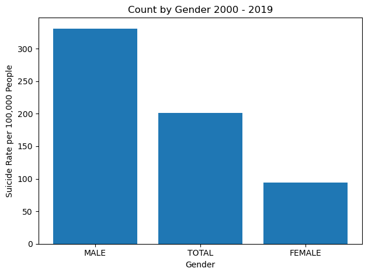
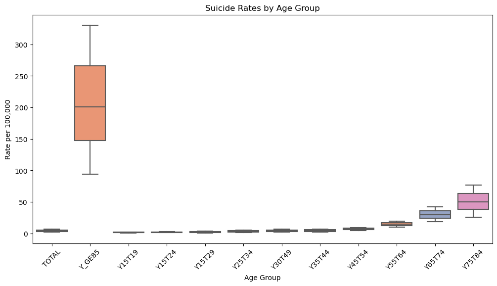

import pandas as pd
import matplotlib.pyplot as plt
import seaborn as snsPREPARE DATA
data = pd.read_csv("../data/who_suicide_latest.csv")
data.head()| IND_ID | IND_CODE | IND_UUID | IND_PER_CODE | DIM_TIME | DIM_TIME_TYPE | DIM_GEO_CODE_M49 | DIM_GEO_CODE_TYPE | DIM_PUBLISH_STATE_CODE | IND_NAME | GEO_NAME_SHORT | DIM_SEX | DIM_AGE | RATE_PER_100000_N | RATE_PER_100000_NL | RATE_PER_100000_NU | |
|---|---|---|---|---|---|---|---|---|---|---|---|---|---|---|---|---|
| 0 | 16BBF41SDGSUICIDE | SDGSUICIDE | 16BBF41 | SDGSUICIDE | 2013 | YEAR | 800 | COUNTRY | PUBLISHED | Suicide deaths | Uganda | FEMALE | TOTAL | 1.7100 | 0.992 | 2.7900 |
| 1 | 16BBF41SDGSUICIDE | SDGSUICIDE | 16BBF41 | SDGSUICIDE | 2005 | YEAR | 818 | COUNTRY | PUBLISHED | Suicide deaths | Egypt | FEMALE | TOTAL | 2.3000 | 1.220 | 3.8000 |
| 2 | 16BBF41SDGSUICIDE | SDGSUICIDE | 16BBF41 | SDGSUICIDE | 2015 | YEAR | 818 | COUNTRY | PUBLISHED | Suicide deaths | Egypt | TOTAL | TOTAL | 3.2800 | 1.570 | 6.1300 |
| 3 | 16BBF41SDGSUICIDE | SDGSUICIDE | 16BBF41 | SDGSUICIDE | 2003 | YEAR | 858 | COUNTRY | PUBLISHED | Suicide deaths | Uruguay | MALE | TOTAL | 24.7415 | 21.443 | 28.3491 |
| 4 | 16BBF41SDGSUICIDE | SDGSUICIDE | 16BBF41 | SDGSUICIDE | 2003 | YEAR | 860 | COUNTRY | PUBLISHED | Suicide deaths | Uzbekistan | TOTAL | TOTAL | 9.0200 | 7.600 | 10.5763 |
data.nunique()IND_ID 1
IND_CODE 1
IND_UUID 1
IND_PER_CODE 1
DIM_TIME 20
DIM_TIME_TYPE 1
DIM_GEO_CODE_M49 194
DIM_GEO_CODE_TYPE 4
DIM_PUBLISH_STATE_CODE 1
IND_NAME 1
GEO_NAME_SHORT 194
DIM_SEX 3
DIM_AGE 12
RATE_PER_100000_N 7307
RATE_PER_100000_NL 4036
RATE_PER_100000_NU 7231
dtype: int64data.shape(17518, 16)Nigerian_suicide_cases = data[data["GEO_NAME_SHORT"] == "Nigeria"]
Nigerian_suicide_cases.head()| IND_ID | IND_CODE | IND_UUID | IND_PER_CODE | DIM_TIME | DIM_TIME_TYPE | DIM_GEO_CODE_M49 | DIM_GEO_CODE_TYPE | DIM_PUBLISH_STATE_CODE | IND_NAME | GEO_NAME_SHORT | DIM_SEX | DIM_AGE | RATE_PER_100000_N | RATE_PER_100000_NL | RATE_PER_100000_NU | |
|---|---|---|---|---|---|---|---|---|---|---|---|---|---|---|---|---|
| 79 | 16BBF41SDGSUICIDE | SDGSUICIDE | 16BBF41 | SDGSUICIDE | 2001 | YEAR | 566 | COUNTRY | PUBLISHED | Suicide deaths | Nigeria | MALE | TOTAL | 6.92 | 3.93 | 11.3773 |
| 80 | 16BBF41SDGSUICIDE | SDGSUICIDE | 16BBF41 | SDGSUICIDE | 2010 | YEAR | 566 | COUNTRY | PUBLISHED | Suicide deaths | Nigeria | MALE | TOTAL | 6.36 | 3.91 | 10.1658 |
| 87 | 16BBF41SDGSUICIDE | SDGSUICIDE | 16BBF41 | SDGSUICIDE | 2005 | YEAR | 566 | COUNTRY | PUBLISHED | Suicide deaths | Nigeria | MALE | TOTAL | 6.66 | 3.87 | 11.1323 |
| 311 | 16BBF41SDGSUICIDE | SDGSUICIDE | 16BBF41 | SDGSUICIDE | 2019 | YEAR | 566 | COUNTRY | PUBLISHED | Suicide deaths | Nigeria | TOTAL | TOTAL | 3.49 | 1.95 | 5.8400 |
| 646 | 16BBF41SDGSUICIDE | SDGSUICIDE | 16BBF41 | SDGSUICIDE | 2004 | YEAR | 566 | COUNTRY | PUBLISHED | Suicide deaths | Nigeria | FEMALE | TOTAL | 2.85 | 1.52 | 4.4600 |
Nigerian_suicide_cases.isnull().sum()IND_ID 0
IND_CODE 0
IND_UUID 0
IND_PER_CODE 0
DIM_TIME 0
DIM_TIME_TYPE 0
DIM_GEO_CODE_M49 0
DIM_GEO_CODE_TYPE 0
DIM_PUBLISH_STATE_CODE 0
IND_NAME 0
GEO_NAME_SHORT 0
DIM_SEX 0
DIM_AGE 0
RATE_PER_100000_N 0
RATE_PER_100000_NL 33
RATE_PER_100000_NU 33
dtype: int64Nigerian_suicide_cases.rename(columns={
"DIM_TIME": "Suicide_Year",
"DIM_SEX": "Gender",
"RATE_PER_100000_N": "Suicide_Rate_N",
"RATE_PER_100000_NL": "Lower_Rate_NL",
"RATE_PER_100000_NU": "Upper_Rate_NU"
}, inplace=True)/var/folders/dl/jhpsjpfn1_5dp95f954942k80000gn/T/ipykernel_13977/395664634.py:1: SettingWithCopyWarning:
A value is trying to be set on a copy of a slice from a DataFrame
See the caveats in the documentation: https://pandas.pydata.org/pandas-docs/stable/user_guide/indexing.html#returning-a-view-versus-a-copy
Nigerian_suicide_cases.rename(columns={Nigerian_suicide_cases.to_csv("../data/nigerian_suicide_cases.csv")sorted(Nigerian_suicide_cases["Suicide_Year"].unique())
Nigerian_suicide_cases["Suicide_Year"].unique()
Nigerian_suicide_cases["Suicide_Year"].nunique()20# Get National average suicide rate 2019
overall_rate = Nigerian_suicide_cases[
(Nigerian_suicide_cases["DIM_AGE"] == "TOTAL") &
(Nigerian_suicide_cases["Gender"] == "TOTAL")
]
overall_rate.head()
latest_year = overall_rate["Suicide_Year"].max()
latest_rate = overall_rate[overall_rate["Suicide_Year"] == latest_year]["Suicide_Rate_N"].values[0]
print(f"The National average suicide rate for the year {latest_year} is: {latest_rate}")The National average suicide rate for the year 2019 is: 3.49# # Get National average suicide rate 2010
latest_rate = overall_rate[overall_rate["Suicide_Year"] == 2010]["Suicide_Rate_N"].values[0]
print(f"The National average suicide rate for the year {2010} is: {latest_rate}")The National average suicide rate for the year 2010 is: 4.4Visualizations
# Line plot to show suicide mortality rate for relevant yearsmale = Nigerian_suicide_cases[Nigerian_suicide_cases["Gender"] == "MALE"]
female = Nigerian_suicide_cases[Nigerian_suicide_cases["Gender"] == "FEMALE"]
total = Nigerian_suicide_cases[Nigerian_suicide_cases["Gender"] == "TOTAL"]plt.figure(figsize=(12, 6))
sns.lineplot(
data=male,
x="Suicide_Year", y="Suicide_Rate_N",
marker="o", label="Male", color="#1f77b4"
)
sns.lineplot(
data=female,
x="Suicide_Year", y="Suicide_Rate_N",
marker="o", label="Female", color="#ff7f0e"
)
sns.lineplot(
data=total,
x="Suicide_Year", y="Suicide_Rate_N",
marker="o", label="Total", color="#2ca02c"
)
plt.fill_between(
male["Suicide_Year"], male["Lower_Rate_NL"], male["Upper_Rate_NU"],
alpha=0.2, color="#1f77b4"
)
plt.fill_between(
female["Suicide_Year"], female["Lower_Rate_NL"], female["Upper_Rate_NU"],
alpha=0.2, color="#ff7f0e"
)
plt.title("Suicide Mortality Rates in Nigeria (2000–2017)")
plt.xlabel("Year")
plt.ylabel("Rate per 100,000")
plt.ylim(0, 12)
plt.grid(alpha=0.3)
plt.legend()/opt/anaconda3/lib/python3.11/site-packages/seaborn/_oldcore.py:1119: FutureWarning: use_inf_as_na option is deprecated and will be removed in a future version. Convert inf values to NaN before operating instead.
with pd.option_context('mode.use_inf_as_na', True):
/opt/anaconda3/lib/python3.11/site-packages/seaborn/_oldcore.py:1119: FutureWarning: use_inf_as_na option is deprecated and will be removed in a future version. Convert inf values to NaN before operating instead.
with pd.option_context('mode.use_inf_as_na', True):
/opt/anaconda3/lib/python3.11/site-packages/seaborn/_oldcore.py:1119: FutureWarning: use_inf_as_na option is deprecated and will be removed in a future version. Convert inf values to NaN before operating instead.
with pd.option_context('mode.use_inf_as_na', True):
/opt/anaconda3/lib/python3.11/site-packages/seaborn/_oldcore.py:1119: FutureWarning: use_inf_as_na option is deprecated and will be removed in a future version. Convert inf values to NaN before operating instead.
with pd.option_context('mode.use_inf_as_na', True):
/opt/anaconda3/lib/python3.11/site-packages/seaborn/_oldcore.py:1119: FutureWarning: use_inf_as_na option is deprecated and will be removed in a future version. Convert inf values to NaN before operating instead.
with pd.option_context('mode.use_inf_as_na', True):
/opt/anaconda3/lib/python3.11/site-packages/seaborn/_oldcore.py:1119: FutureWarning: use_inf_as_na option is deprecated and will be removed in a future version. Convert inf values to NaN before operating instead.
with pd.option_context('mode.use_inf_as_na', True):
overall_rate = Nigerian_suicide_cases['Suicide_Rate_N'].mean()
print(f"Overall suicide rate (per 100,000): {overall_rate:.2f}")Overall suicide rate (per 100,000): 13.36# Bar chart to show which gender committed more suicideplt.bar(Nigerian_suicide_cases['Gender'], Nigerian_suicide_cases['Suicide_Rate_N'])
plt.title('Count by Gender 2000 - 2019')
plt.xlabel('Gender')
plt.ylabel('Suicide Rate per 100,000 People')
plt.tight_layout()
plt.show()
# Analysis by Age Group
age_data = Nigerian_suicide_cases[Nigerian_suicide_cases["DIM_AGE"].notna()]
plt.figure(figsize=(12, 6))
sns.boxplot(
x="DIM_AGE",
y="Suicide_Rate_N",
data=age_data,
palette="Set2"
)
plt.title("Suicide Rates by Age Group")
plt.xlabel("Age Group")
plt.ylabel("Rate per 100,000")
plt.xticks(rotation=45)
plt.show()
# Error Bar
Nigerian_suicide_cases = Nigerian_suicide_cases.sort_values('Suicide_Year')
lower_errors = Nigerian_suicide_cases['Suicide_Rate_N'] - Nigerian_suicide_cases['Lower_Rate_NL']
upper_errors = Nigerian_suicide_cases['Upper_Rate_NU'] - Nigerian_suicide_cases['Suicide_Rate_N']
error = [lower_errors, upper_errors]
# Create the error bar plot
plt.figure(figsize=(10, 6))
plt.errorbar(
Nigerian_suicide_cases['Suicide_Year'],
Nigerian_suicide_cases['Suicide_Rate_N'],
yerr=error,
fmt='o-', # 'o' for marker, '-' for line
ecolor='gray',
capsize=4,
label='Suicide Rate with Uncertainty'
)
# Labeling
plt.title('Suicide Rate in Nigeria (with Uncertainty)')
plt.xlabel('Suicide Year')
plt.ylabel('Suicide Rate per 100,000')
plt.grid(True)
plt.legend()
plt.tight_layout()
plt.show()
Nigerian_suicide_cases.groupby('Suicide_Year')['Suicide_Rate_N'].mean().plot(kind='line')